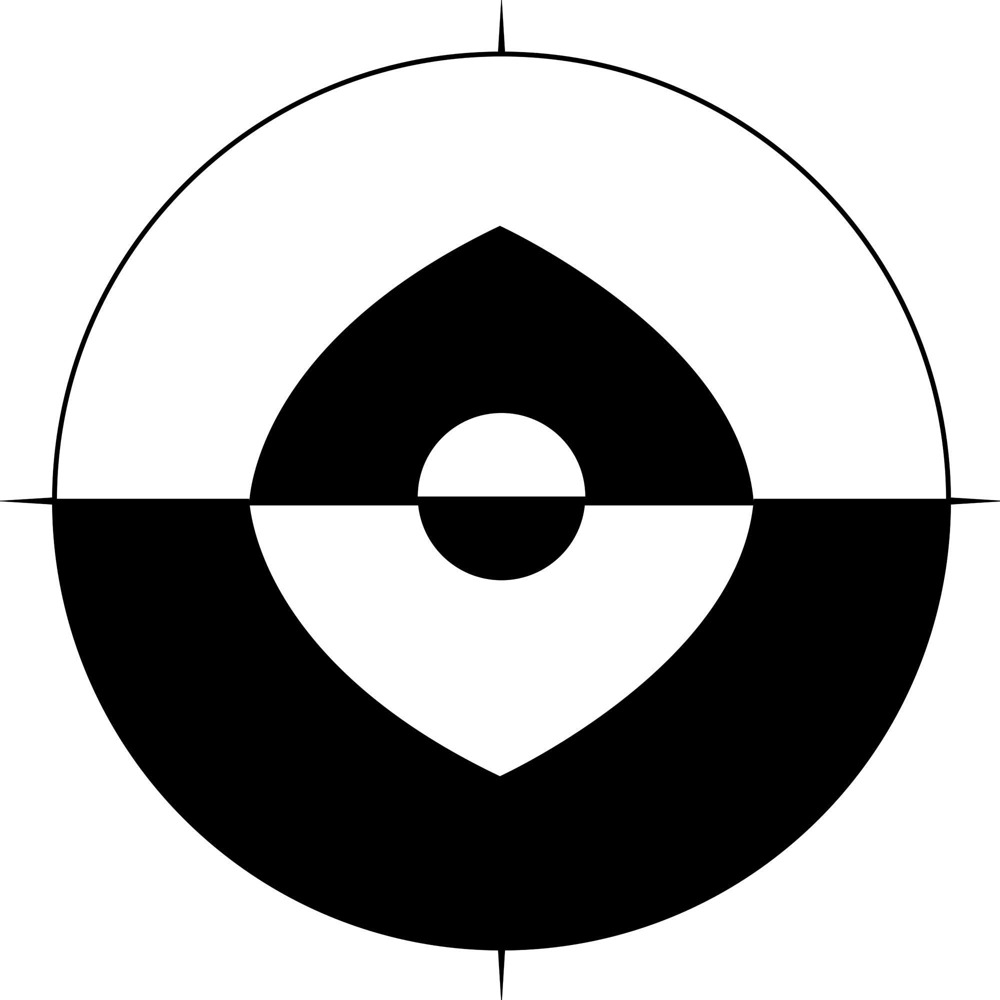

Pondasi dunia Wargantara—dua dunia, satu garis, dan para entitas yang berani menyeberanginya.
Ada yang menyebut mereka nekat. Ada yang menyebut mereka bodoh. Sebagian kecil—mereka yang sudah cukup lama hidup di antara dua dunia—mungkin akan menyebutnya sebagai sesuatu yang tak terhindarkan.
Wargantara adalah sebutan bagi makhluk astral yang memilih untuk hidup di dunia manusia secara permanen atau semi-permanen. Definisi lengkap, asal-usul istilah, serta kondisi dan konsekuensi menjadi Wargantara tercantum di bagian Ras Umum.
Makhluk astral—atau dalam bahasa Arab disebut gaib, yang berarti tersembunyi—adalah entitas yang keberadaannya mendahului manusia. Banyak di antara mereka tercipta jauh sebelum Adam dan Hawa disebut dalam catatan penciptaan. Mereka hidup dalam lapisan realitas yang berbeda, tunduk pada hukum yang berbeda, dan pada dasarnya tidak dirancang untuk bersinggungan dengan dunia manusia secara langsung—kecuali mereka yang memang dikirim untuk tujuan tertentu, seperti para malaikat yang mengemban misi dari Sang Pencipta.
Namun keberadaan manusia—makhluk yang digadang-gadang sebagai ciptaan paling sempurna—menciptakan sesuatu yang tidak pernah benar-benar bisa diabaikan: rasa penasaran. Dan dari rasa penasaran itu lahir keinginan. Dan dari keinginan itu lahir keberanian—atau, bergantung pada sudut pandang, keputusasaan.
Oknum-oknum pertama yang mencoba menampakkan diri di dunia manusia melakukannya tanpa jaminan apapun. Tidak ada panduan, tidak ada kontrak, tidak ada sistem yang menjamin keselamatan mereka. Yang ada hanya risiko: terkikisnya eksistensi, terkurasnya energi, atau dalam kasus yang paling ekstrem—kehilangan diri sepenuhnya demi sesuatu yang bahkan tidak menjanjikan imbalan apapun. Mereka tetap melakukannya.
Tidak ada satu jawaban yang berlaku untuk semua. Sebagian datang karena iri—melihat manusia dengan segala keterbatasannya, namun tetap mendapat tempat di dunia yang terasa lebih nyata, lebih hidup. Sebagian datang karena penasaran—ingin tahu rasanya memiliki nama yang bisa dipanggil, wajah yang bisa diingat, kehadiran yang bisa dirasakan. Sebagian lagi datang karena alasan yang jauh lebih personal—alasan yang bahkan mereka sendiri tidak selalu mau mengakuinya.
Ribuan tahun telah berlalu sejak crossing pertama yang tercatat. Dunia astral telah berkembang—peraturan telah dibentuk, kontrak telah ditetapkan, dan sistem seperti Astral Realm Authority kini berdiri sebagai badan yang mengawasi pergerakan entitas antara dua dunia.
Wargantara tetaplah kaum minoritas. Jumlah mereka diperkirakan tidak lebih dari satu persen dari total populasi yang ada di dunia manusia—dan bahkan angka itu mungkin terlalu optimis. Kemungkinan untuk berpapasan dengan satu dari mereka tanpa menyadarinya sangat tinggi, mengingat tidak semua manusia memiliki ketajaman indera yang cukup untuk mendeteksi keberadaan makhluk dari sisi gaib.
Namun mereka yang hidup di era ini jauh lebih siap. Teknologi dunia astral yang berkembang signifikan membuat adaptasi menjadi lebih mudah, dan kehadiran mereka di dunia manusia semakin sulit dibedakan. Wargantara hari ini ada di mana-mana: di belakang meja rapat sebagai CEO, di balik mikrofon sebagai penyiar, di tengah keramaian sebagai orang biasa yang tidak ingin terlalu diperhatikan. Dan yang paling umum dari semuanya—di balik layar, dengan jutaan mata menatap, sebagai content creator.
Mereka ada. Mereka tinggal. Dan sebagian besar dari kita tidak pernah menyadarinya.
Dokumen ini disusun sebagai titik masuk bagi siapapun yang baru mengenal catatan ini. Beberapa detail telah disesuaikan untuk konsumsi umum. Untuk informasi yang tidak tercantum di sini—mungkin memang tidak seharusnya tercantum.
Dunia manusia tidak istimewa—setidaknya, begitulah yang sering dikatakan oleh mereka yang belum pernah benar-benar tinggal di dalamnya. Dari lapisan realitas yang berbeda, ia tampak terlalu berisik, terlalu sementara, terlalu penuh keterbatasan. Gravitasi yang mengikat. Waktu yang berjalan hanya ke satu arah. Tubuh yang aus sebelum sempat melakukan semua yang ingin dilakukan.
Dan tetap saja, ribuan dari mereka memilih untuk datang ke sini—karena ada sesuatu di dunia manusia yang tidak bisa ditiru oleh lapisan realitas manapun.
Dunia manusia berjalan di atas pondasi yang tidak bisa ditawar: sebab dan akibat. Ruang dan waktu bergerak linear. Materi tidak bisa berada di dua tempat sekaligus. Energi tidak muncul dari kehampaan. Bagi entitas astral yang terbiasa dengan lapisan realitas yang lebih fleksibel, adaptasi terhadap hukum-hukum ini adalah salah satu tantangan terbesar dari proses crossing—sekaligus daya tariknya. Ada sesuatu yang terasa nyata di dunia yang punya batas. Rasa sakit yang benar-benar sakit. Kebahagiaan yang bermakna karena ada kontrasnya.
Dunia manusia adalah satu-satunya tempat di mana waktu benar-benar bergerak—musim berganti, wajah menua, kota-kota tumbuh dan runtuh. Bagi entitas yang terbiasa dengan stagnansi dunia astral, ritme perubahan ini bisa terasa seperti sesuatu yang hidup. Mengancam, sekaligus menggoda.
Makhluk yang satu ini menarik perhatian bukan karena kemampuan mereka—melainkan karena ketidaksesuaian antara keterbatasan mereka dan apa yang tetap mereka coba capai. Umur pendek. Tubuh yang rapuh. Ingatan yang tidak sempurna. Dan meski begitu, mereka membangun peradaban, menulis sejarah, jatuh cinta, kehilangan, dan memulai lagi dari nol.
Dari sudut pandang dunia astral, manusia adalah paradoks berjalan. Mereka digadang-gadang sebagai ciptaan paling sempurna—tapi terlihat jauh dari sempurna di hampir setiap aspek teknis. Makhluk astral yang lebih tua sering mendebat hal ini. Mereka yang lebih bijak biasanya memilih diam, karena sudah cukup lama mengamati untuk tahu bahwa "sempurna" mungkin bukan kata yang dimaksudkan dalam pengertian yang sama.
Yang jelas: tidak ada makhluk lain yang punya amanah yang sama. Tidak ada yang diberi tanggung jawab setara. Dan tidak ada yang, dengan segala keterbatasannya, tetap dianggap cukup layak untuk menyandang beban itu.
Peradaban manusia berkembang dengan kecepatan yang bahkan mengejutkan makhluk-makhluk yang sudah ada jauh lebih lama dari mereka. Dari yang awalnya hanya api dan batu, dalam rentang waktu yang—dari perspektif astral—tidak lebih dari sekejap mata, kini menjadi jaringan global, kecerdasan buatan, dan kota-kota yang tidak pernah benar-benar tidur. Percepatan ini tidak lepas dari perhatian dunia astral. Sebagian mengagumi. Sebagian khawatir. Sebagian lagi memandangnya dengan rasa iri yang tidak mau diakui secara terbuka.
Yang paling menarik perhatian entitas astral bukan teknologinya sendiri, melainkan cara manusia menggunakannya: untuk terhubung, untuk dikenal, untuk meninggalkan jejak di dunia yang tidak menjamin mereka akan diingat. Internet, media sosial, konten—semua itu adalah cara manusia berteriak ke semesta bahwa mereka ada. Dan bagi makhluk yang sudah eksis selama ribuan tahun tanpa pernah perlu membuktikannya, ada sesuatu yang sangat manusiawi—dan sangat menggerakkan—dari kebutuhan itu.
Entitas astral yang sudah lama menetap di dunia manusia pada akhirnya ikut terserap dalam ritme ini. Mereka punya jadwal, punya tagihan, punya algoritma yang perlu diikuti. Beberapa di antaranya sudah sangat mahir menavigasi sistem-sistem ini. Beberapa lagi masih bingung kenapa konten mereka tidak mendapat traksi padahal sudah posting jam tiga pagi.
Dunia manusia tidak pernah benar-benar tertutup dari sisi astral. Ada titik-titik di mana lapisan antara dua dunia menipis—karena usia lokasi, peristiwa yang pernah terjadi di sana, atau alasan yang bahkan ARA belum sepenuhnya berhasil dokumentasikan. Manusia yang tinggal di dekatnya kadang merasakannya tanpa memahaminya: ketidaknyamanan yang tidak jelas sumbernya, mimpi yang terlalu koheren, perasaan diawasi di ruangan kosong. Mereka yang bisa melihat lebih dari itu biasanya memilih untuk tidak membicarakannya.
Wargantara hidup dalam kondisi eksistensi ganda—hadir secara fisik di dunia manusia, tapi akar keberadaan mereka tetap terhubung ke sisi astral. Adaptasi mereka bervariasi: ada yang sudah hafal luar kepala cara berbicara dan bercanda yang terasa natural, ada yang masih bereaksi dengan cara yang sedikit tidak pas terhadap hal yang harusnya biasa. Manusia biasanya tidak memperhatikan. Mungkin orang ini introvert, begitu yang terlintas—tidak tahu betapa presisinya asumsi itu, hanya untuk alasan yang berbeda.
Sebagian besar memilih untuk tidak mengungkap identitas mereka—bukan karena takut, tapi karena penjelasannya terlalu panjang untuk hari Selasa biasa di tengah makan siang. Lebih mudah untuk cukup ada.
Lokasi-lokasi spesifik di mana lapisan antara dua dunia menipis tidak dicantumkan di sini. Bukan karena tidak ada—tapi karena beberapa informasi lebih aman tetap tidak tertulis. Siapapun yang membutuhkan daftar itu kemungkinan sudah tahu cara menemukannya sendiri. Siapapun yang belum tahu kemungkinan belum siap untuk mengetahuinya.
Lingkungan astral—alam gaib, alam spiritual, atau apapun yang mau disebutkan—adalah bagian dari dimensi yang digaibkan oleh Pencipta. Dimensi ini menyalin banyak bentuk yang ada di alam semesta dengan berbagai pengubahan: bukan salinan persis, bukan juga sesuatu yang sepenuhnya asing.
Dalam kesehariannya, kehidupan makhluk astral tidak terlalu jauh berbeda dari manusia. Hanya saja ada beberapa hal yang benar-benar membedakan mereka—mulai dari bagaimana teritori bekerja, teknologi yang mereka gunakan, hingga cara mereka memandang dunia di sekitarnya.
Secara struktur geologi, dunia astral mengikuti tata letak bumi—tapi isi permukaannya bisa sangat berbeda. Gedung pencakar langit digantikan prasasti tua dan reruntuhan kerajaan. Hutan-hutan yang sepi dihuni oleh ras-ras yang tidak mau diganggu. Dan di beberapa tempat, waktu terasa berjalan dengan cara yang berbeda.
Teritori di dunia astral terbagi dalam beberapa pola:
Kebanyakan dari mereka memilih hidup masing-masing karena sudah terlalu lama. Tapi bukan berarti tidak ada gesekan—konflik antar kerajaan, antar planet, antar ras, masih terjadi. Kadang karena alasan yang serius. Kadang hanya karena bosan.
Teknologi mereka bisa sangat maju—ponsel, alat teleportasi, kendaraan yang menempuh jarak antar kota dalam hitungan menit. Banyak makhluk astral yang hidup seperti manusia biasa, bahkan memiliki akun media sosial dengan identitas yang menyamar. Tapi bisa juga sebaliknya: kawasan yang sangat terbelakang karena budaya yang dianut menolak modernisasi sepenuhnya. Semuanya kembali ke di mana mereka menetap dan berkembang.
Wujud mereka bervariasi dari yang paling sederhana hingga yang paling sulit dibayangkan—bola arwah, makhluk monstrous, hewan-hewan mitologi, sosok yang begitu abstrak sampai terasa lebih seperti konsep daripada makhluk. Semua yang manusia anggap dongeng, semua yang hanya dikenal lewat cerita-cerita lama, memang benar-benar ada. Rekam jejak mereka sengaja ditinggalkan untuk ditemukan, ditelaah, dan dijadikan bahan cerita—meski versi yang sampai ke manusia tidak selalu akurat.
Seperti manusia, mereka ditugaskan untuk menyembah Tuhan—dan seperti manusia pula, ada yang taat dan ada yang membangkang. Di luar itu, kehidupan mereka tidak terlalu berbeda: bekerja, menikah, bersekolah, punya anak, bertengkar dengan tetangga. Cukup familiar, kalau dipikir-pikir.
Kepintaran mereka bisa sangat ekstrem ke dua arah—ada yang luar biasa cerdas, ada yang sebaliknya. Banyak yang bersekolah, bahkan berkelana dari satu tempat ke tempat lain untuk menimba ilmu. Tapi untuk EQ, tidak semuanya bisa diajak bicara dengan nyaman. Emosi mereka lebih menonjol, dan mereka tidak berpikir dengan cara yang serumit manusia karena memang diciptakan lebih sederhana.
Pengecualian ada pada arwah yang pernah hidup sebagai manusia—mereka yang dekat dengan dunia manusia dan mempelajari gerak-geriknya bisa terlihat sangat natural, hampir tidak bisa dibedakan. Hanya satu yang tidak bisa mereka miliki: badan fisik.
Untuk musim: tidak terlalu berpengaruh di dunia astral. Semuanya cenderung stagnan—tidak ada perubahan iklim berarti. Stabilitas yang terdengar nyaman, sampai kamu menyadari betapa panjangnya waktu yang harus diisi tanpa variasi apapun.
Ada yang menyebutnya veil. Ada yang menyebutnya hijab. Ada yang tidak menyebutnya dengan nama apapun karena sudah lama berhenti mencoba memahaminya secara konseptual—dan memilih untuk hanya tahu cara menyeberanginya.
Batas Antara adalah lapisan pemisah antara dunia manusia dan dunia astral. Bukan tembok. Bukan garis. Lebih tepat disebut sebagai kondisi—sebuah keadaan di mana dua lapisan realitas yang secara fundamental berbeda bisa eksis berdampingan tanpa saling menghancurkan. Ia tidak terlihat. Tidak bisa disentuh. Tapi efeknya terasa oleh siapapun yang cukup sensitif, atau cukup dekat, atau cukup nekat untuk mendekati tepinya.
Yang menarik tentang Batas Antara adalah bahwa ia sudah diamati dari dua arah yang berbeda—oleh sains dan oleh tradisi keagamaan—dan keduanya sampai pada kesimpulan yang lebih serupa dari yang biasanya diakui oleh masing-masing pihak.
Fisika modern mengakui bahwa realitas yang bisa kita observasi hanyalah sebagian kecil dari keseluruhan yang ada. Sekitar 27% alam semesta terdiri dari dark matter—materi yang tidak berinteraksi dengan cahaya, tidak bisa dideteksi secara langsung, namun keberadaannya terbukti dari efek gravitasionalnya terhadap materi biasa. Sekitar 68% lagi adalah dark energy yang lebih misterius lagi. Sisanya—hanya 5%—adalah segala sesuatu yang pernah kita lihat, sentuh, dan ukur.
Artinya: 95% dari alam semesta adalah sesuatu yang tidak kita ketahui cara berinteraksinya. Teori string dan fisika kuantum membuka kemungkinan adanya dimensi-dimensi tambahan yang terlipat di dalam struktur ruang-waktu—dimensi yang secara matematis konsisten, tapi tidak bisa diakses oleh materi dan energi biasa. Lapisan-lapisan ini bisa saja eksis bersamaan dengan dunia yang kita tinggali, di koordinat yang sama, hanya berada di frekuensi yang berbeda.
Hampir semua tradisi keagamaan besar mengenal konsep pemisah antara dunia yang terlihat dan yang tidak terlihat—meski masing-masing menamakannya berbeda. Ada yang menyebutnya barzakh: ambang, pemisah, sesuatu yang berada di antara dua keadaan yang tidak seharusnya bercampur. Ada yang menggambarkannya sebagai tirai, sebagai langit-langit yang memisahkan lapisan-lapisan ciptaan, sebagai batas antara yang sakral dan yang fana.
Yang konsisten di hampir semua deskripsi ini adalah satu hal: batas itu ada bukan karena kebetulan, tapi karena memang dirancang demikian. Makhluk dari substansi yang berbeda—yang diciptakan dari elemen yang berbeda, yang tunduk pada hukum yang berbeda—tidak bisa sepenuhnya berbagi satu lapisan realitas tanpa ada sesuatu yang memisahkan mereka. Bukan sebagai hukuman. Tapi sebagai arsitektur dasar dari cara segalanya dibuat.
Perbedaan substansi itu bukan sekadar metafor. Ia menjelaskan mengapa interaksi antara dua sisi tidak terjadi secara natural—dan mengapa, ketika terjadi, selalu ada harga yang harus dibayar oleh salah satu atau kedua belah pihak.
Keduanya tidak salah—hanya mendeskripsikan struktur yang sama dari sudut yang berbeda.
Batas Antara bukan sesuatu yang statis. Ia berfluktuasi—menipis di tempat-tempat tertentu, menebal di tempat lain, bergeser secara musiman atau dalam respons terhadap konsentrasi energi yang signifikan. Beberapa titik di dunia manusia secara alami lebih tipis dari yang lain: tempat-tempat tua, tempat-tempat yang sudah lama menyaksikan kehidupan dan kematian dan peristiwa yang meninggalkan bekas di lapisan di bawah permukaan.
Dari sisi astral, Batas Antara terasa seperti tekanan—resistansi yang makin terasa semakin mendekati sisi dunia manusia. Dari sisi manusia, ia tidak terasa seperti apapun. Tapi ada di sana, dan selalu ada di sana, jauh sebelum makhluk apapun mencoba menyeberanginya.
Crossing adalah tindakan menyeberangi Batas Antara secara sadar—permanen atau semi-permanen. Ini bukan sekadar perpindahan lokasi, melainkan perubahan kondisi eksistensi: entitas astral harus membentuk representasi fisik yang cukup kohesif untuk berfungsi di bawah hukum dunia manusia. Beberapa melakukannya dengan lancar karena sudah berlatih atau punya kemampuan alami yang membantu transisi. Yang lain butuh waktu, bantuan pihak ketiga, atau belajar dari cara yang paling tidak menyenangkan.
Tidak ada yang gratis di crossing. Setiap kali entitas astral hadir di dunia manusia, ada harga yang harus dibayar—bukan sebagai hukuman, tapi sebagai cara kerja keseimbangan antara dua lapisan realitas yang berbeda.
The Cost punya dua dimensi: waktu (semakin lama di dunia manusia, semakin besar drain-nya) dan manifestasi (semakin nyata kehadiran mereka—semakin banyak yang bisa melihat, mendengar, atau berinteraksi—semakin mahal harganya). Mau lebih visible, bayar lebih mahal dan/atau waktunya jadi lebih singkat. Mau hemat, harus lebih tersembunyi.
Untuk crossing permanen, ada toll awal saat crossing pertama: sebagian energi dasar yang membentuk keberadaan mereka tertinggal di sisi lain. Bisa berupa hilangnya akses ke kemampuan tertentu, koneksi ke dunia astral yang melemah, potongan ingatan, atau fragmentasi identitas. Harga itu sudah ditetapkan jauh sebelum ada yang mencoba membayarnya.
Pertanyaan tentang apakah Batas Antara bisa dihancurkan sepenuhnya sudah ada sejak lama. Jawabannya, sejauh yang bisa dikonfirmasi, adalah tidak—karena ia bukan konstruksi yang dibuat, melainkan kondisi yang lahir dari perbedaan mendasar antara dua jenis keberadaan. Kamu tidak bisa menghapus perbedaan. Kamu hanya bisa belajar cara hidup di tepinya.
Dua dunia, dua jenis penghuni—tapi garis di antara mereka tidak selalu sejelas yang terlihat. Yang membedakan bukan hanya asal atau substansi, tapi seberapa jauh masing-masing bisa melampaui batas yang sudah ditetapkan untuk mereka.
Secara teknis, manusia adalah satu-satunya makhluk yang memang dirancang untuk hidup di lapisan realitas ini secara penuh—berbeda dari hewan dan tumbuhan yang ada di dalamnya, manusia punya kapasitas kesadaran dan kehendak yang membuat mereka unik di dunia ini. Tapi "manusia" bukan kategori yang sempit. Di dalamnya ada spektrum yang lebih luas dari yang terlihat di permukaan.
Sebagian besar manusia tidak menyadari keberadaan dunia astral sama sekali. Bukan karena tidak ada—tapi karena indra mereka tidak dikalibrasi untuk mendeteksinya, dan kehidupan sehari-hari tidak memberikan alasan untuk mempertanyakannya. Mereka hidup, bekerja, berhubungan satu sama lain, dan mati tanpa pernah bersinggungan langsung dengan sisi lain. Ini bukan kekurangan. Ini memang desainnya.
Tapi ada sebagian kecil yang berbeda.
Penghuni dunia astral jauh lebih beragam dari yang bisa dirangkum dalam satu daftar. Ini bukan klasifikasi lengkap—ini hanya gambaran umum dari kategori-kategori yang paling sering bersinggungan dengan dunia manusia, baik karena pilihan mereka sendiri, maupun karena tugas.
Wargantara adalah sebutan bagi makhluk astral yang hidup di dunia manusia secara permanen atau semi-permanen. Ini bukan ras—ini kondisi. Siapapun dari kategori makhluk gaib di atas bisa menjadi Wargantara, asalkan memenuhi kondisi yang berlaku.
Ada dua jalur masuk ke status ini. Mayoritas melalui jalur sukarela—mereka yang datang atas kehendak sendiri, dengan alasan masing-masing yang tidak selalu perlu dijelaskan ke siapapun. Tapi ada juga jalur kedua: hukuman atau penebusan yang dijatuhkan oleh otoritas astral. Crossing ke dunia manusia, dalam konteks ini, bukan pilihan—melainkan konsekuensi. Sesuatu yang ditetapkan dari luar, bukan dari dalam.
Menjadi Wargantara bukan hanya soal di mana seseorang tinggal. Ada kondisi-kondisi yang harus terpenuhi—baik yang disadari maupun yang tidak—sebelum seseorang bisa benar-benar disebut dengan nama itu.
Jalur Sukarela:
Jalur Hukuman / Penebusan:
Wargantara yang terdaftar secara resmi mendapat perlindungan dari Astral Realm Authority di kedua sisi—artinya ada badan yang secara teoritis bertanggung jawab atas keselamatan mereka, dan ada jalur resmi untuk mengajukan komplain jika sesuatu berjalan salah. Seberapa efektif perlindungan itu dalam praktiknya adalah pertanyaan lain.
Di sisi kewajiban, mereka terikat oleh kontrak yang ditandatangani saat registrasi: tidak mengungkap keberadaan dunia astral secara sembarangan kepada manusia yang tidak punya kapasitas untuk menerimanya, tidak menggunakan kemampuan astral untuk mengganggu keseimbangan dunia manusia secara signifikan, dan melaporkan diri jika kondisi keberadaan mereka berubah drastis. Aturan-aturan ini ada di atas kertas. Kepatuhan terhadapnya adalah urusan masing-masing individu.
Untuk jalur hukuman: kontrak tidak ditandatangani—ia dijatuhkan. Tidak ada yang bertanya persetujuannya.
Daftar ini tidak lengkap dan tidak dimaksudkan untuk lengkap. Dunia astral terlalu luas untuk dirangkum. Yang tercantum di sini adalah yang paling relevan untuk dipahami dalam konteks interaksi antara dua dunia—sisanya, kamu akan temukan sendiri kalau sudah cukup lama berada di sini.
Tidak ada batasan pekerjaan—Wargantara maupun entitas astral yang hadir di dunia manusia bisa menjalani hampir semua profesi. Di dunia manusia, yang paling umum adalah seniman dan kreator konten, tenaga medis, akademisi, pelaku bisnis, aparat hukum, sampai pekerja lepas tanpa afiliasi. Di dunia astral, peran yang umum ada: penjaga dan pelindung wilayah, pedagang dan perantara, arsiparis, pemuka dan administrator, praktisi ritual, serta kurir lintas dunia. Pekerjaan yang tercantum di AR-CID hanya jabatan resmi terdaftar—apa yang benar-benar dilakukan sehari-hari bisa sangat berbeda.
Wargantara adalah collaborative universe berkonsep lore sandbox—dunia bersama yang dibangun secara kolektif dan terbuka untuk siapapun. Panduan ini ada untuk menjaga konsistensi lore agar tidak ada karakter yang merusak apa yang sudah dibangun bersama.
Semua Wargafana sudah secara otomatis menjadi bagian dari universe ini sebagai manusia—penghuni dunia manusia yang mungkin menyadari atau tidak menyadari keberadaan makhluk astral di sekitar mereka. Tidak perlu AR-CID, tidak perlu OC, tidak perlu melakukan apapun. Kamu sudah ada di sini.
Membuat OC adalah pilihan bebas bagi yang ingin terlibat lebih dalam di sisi sandbox-nya. OC berdiri sendiri sebagai karakter terpisah—bukan representasi diri kamu sebagai Wargafana.
Arc berskala besar sangat boleh—konflik antar kerajaan, krisis di satu kawasan astral, peristiwa yang mempengaruhi satu komunitas semuanya valid. Yang perlu dihindari adalah skala yang terlalu general untuk satu OC: kiamat seluruh semesta, kejadian yang secara lore harusnya melibatkan semua pihak, atau plot yang menuntut karakter lain bereaksi seolah dunia mereka bergantung padanya. Kalau ingin elemen OC-mu dipertimbangkan masuk canon, bisa diajukan ke tim—ini perlu diskusi dan persetujuan, bukan sesuatu yang otomatis.
Kebebasan konsep karakternya cukup luas—inspirasi dari entitas SCP, eldritch horror, mitologi niche, atau apapun yang tidak umum sekalipun bisa masuk, selama kohesif dengan dunia yang sudah ada. Yang penting bukan dari mana inspirasinya, tapi bagaimana karakter itu bisa hidup di dalam universe ini tanpa merusak yang lain.
Konsep karakternya bebas seluas-luasnya—fallen angel, makhluk eldritch, entitas SCP-inspired, mitologi niche, atau apapun yang tidak umum sekalipun semuanya valid, selama kohesif dengan dunia yang ada. Yang penting bukan dari mana inspirasinya, tapi bagaimana karakter itu bisa hidup di dalam universe ini tanpa merusak yang lain.
Yang tidak boleh: klaim identitas canon—membawa nama, identitas, atau peran figur yang sudah punya cerita sendiri di luar universe ini (nama-nama deities, nama-nama malaikat, nama-nama iblis, dll). Keterkaitan samar tetap boleh—halfblood, keturunan jauh, eks-bawahan—asalkan tidak membawa klaim atas kekuatan atau otoritas figur aslinya. Titel boleh, otoritasnya tidak.
Manusia biasa, sensitif, medium/peka, sampai berdarah campuran semuanya tersedia. Karakter manusia tidak bisa menjadi Wargantara—tapi bisa berinteraksi dengan entitas astral, punya hubungan dengan makhluk dari sisi gaib, atau memiliki ketajaman indera di atas rata-rata.
Penghuni dunia astral tersedia luas untuk OC. Tidak ada satu ras yang lebih valid dari yang lain—yang penting karaktermu punya tempat yang kohesif di dalam universe ini. Pilihan rasnya mencakup semua yang sudah terdokumentasi di Ras & Karakter, dan tidak terbatas pada itu saja.
Malaikat tidak tersedia sebagai konsep OC umum—tapi bukan berarti tertutup sepenuhnya. Karena malaikat diciptakan tanpa kehendak bebas dan tunduk penuh pada perintah Pencipta, sulit membangun narasi personal yang kohesif dari sana untuk keperluan OC biasa.
Pengecualian ada untuk konsep yang sifatnya lebih seperti kependudukan—entitas malaikat yang karena alasan tertentu berada dalam sistem ARA secara resmi, dengan SC Level yang kemungkinan masuk ke kisaran L4 atau L5. Ini bukan sesuatu yang bisa ditentukan sendiri: level tersebut butuh autentikasi dan izin ARA, yang dalam praktiknya berarti kamu perlu mendiskusikannya dengan tim admin terlebih dahulu sebelum melanjutkan konsep tersebut.
Keterkaitan samar di luar itu tetap boleh—karakter yang terinspirasi estetika malaikat dengan ras berbeda, halfblood, atau eks-entitas yang pernah berafiliasi dengan struktur malaikat semuanya tidak memerlukan izin khusus.
OC astral yang tidak melakukan crossing tetap punya ruang cerita yang sama luasnya—konflik, relasi, dan arc cerita di sisi astral semuanya valid. Crossing bukan syarat untuk OC astral yang menarik. Untuk OC astral yang melakukan crossing ke sisi manusia, lihat bagian Status Keberadaan di bawah.
Wargantara adalah makhluk astral yang hadir di dunia manusia secara penuh dan permanen—sudah crossing secara sadar, tercatat di ARA, keberadaannya menetap tanpa batasan waktu. Status ini hanya untuk talent Wargantara dan NPC resmi. OC fan tidak bisa mengklaim ini.
OC fan sangat boleh menjadi makhluk astral yang melakukan semi-permanent crossing—hadir di dunia manusia dengan batasan. Bukan Wargantara, tapi tetap punya ruang cerita yang kaya. Bentuk kehadiran yang valid untuk OC:
The Cost kehadiran mereka punya dua dimensi: waktu (semakin lama, semakin besar drain-nya) dan manifestasi (semakin nyata—semakin banyak yang bisa melihat, mendengar, atau berinteraksi—semakin mahal). Untuk mekanisme lengkapnya, baca Batas Antara → The Cost.
| Status | Kehadiran | Tersedia untuk OC? |
|---|---|---|
| Wargantara | Permanen, 24/7, tanpa batas waktu | Talent & Official NPC Only |
| Semi-Permanent Crossing | Terbatas waktu & manifestasi, selalu ada cost | Boleh |
| Manusia | Penghuni dunia manusia secara penuh | Boleh |
| Murni Astral (tanpa crossing) | Hanya di sisi astral | Boleh |
SC Level dan SC Code ditentukan sendiri—selama mengikuti batasan yang berlaku. OC astral yang melakukan crossing wajib punya dua elemen: Crossing Reason (mengapa karaktermu menyeberang—tidak ada jawaban yang salah) dan The Cost (apa yang dibayar, dengan dua dimensi: waktu dan manifestasi).
| Level | Nama | Tersedia untuk OC |
|---|---|---|
| L1 | Public Record | Bebas |
| L2 | Limited Access | Bebas |
| L3 | Restricted | Perlu Justifikasi Lore |
| L4 | High Clearance ⚠ | Autentikasi Resmi ARA |
| L5 | Classified ⚠ | Autentikasi Resmi ARA |
| L0 | Beyond Registry ✕ | Tidak Tersedia |
| Kode | Status | Tersedia untuk OC |
|---|---|---|
| SC-01 | No Surveillance | Ya |
| SC-02 | Passive Monitor | Ya |
| SC-03 | Active Monitor | Ya |
| SC-04 | Restricted Movement ⚠ | Autentikasi Resmi ARA |
| SC-05 | Containment ⚠ | Tidak Tersedia |
Kalau ada yang masih bingung soal apakah konsep OC-mu masuk dalam batas yang diizinkan atau tidak—tanya dulu sebelum lanjut. Jauh lebih mudah mendiskusikannya di awal daripada harus revisi besar-besaran di tengah jalan.
Astral Realm Authority—atau cukup ARA—adalah sistem pencatatan dan pengawasan yang, secara prinsip, mencakup semua makhluk yang ada. Bukan hanya yang astral, bukan hanya yang manusia. Semua. ARA tidak membedakan berdasarkan asal atau sifat—yang ada di dalam catatannya adalah siapapun yang eksis, karena keberadaan itu sendiri yang jadi dasarnya.
Sudah ada sejak sebelum kebanyakan makhluk yang terdaftar di dalamnya lahir. Berapa generasi sistem ini sudah berganti wajah, tidak ada yang benar-benar tahu—atau mau mengakuinya secara resmi.
ARA tidak berdiri di atas logika "siapa yang boleh masuk." Mereka berdiri di atas satu premis yang jauh lebih sederhana: kalau kau ada, kau tercatat. Manusia, jin, malaikat, arwah, entitas primordial—semua masuk dalam sistem yang sama, dengan format dokumen yang sama. Tidak ada jalur khusus berdasarkan ras, tidak ada hierarki yang menentukan siapa yang lebih berhak dapat nomor registrasi.
Yang membedakan bukan siapa kamu, tapi apa yang kamu lakukan dan seberapa jauh kamu bersinggungan dengan dua dunia sekaligus. Dari situ SC Level dan SC Code ditetapkan—dan dari situ juga perlindungan, atau konsekuensinya, berlaku.
Ada perdebatan panjang soal apakah malaikat benar-benar "terdaftar" dalam arti yang sama dengan entitas lain—mengingat pergerakan mereka tidak pernah melewati jalur registrasi biasa. Jawaban resmi ARA soal ini tidak pernah keluar. Kemungkinan besar tidak akan.
Dokumen resmi mereka menyebutnya sebagai "pemeliharaan keseimbangan antara lapisan realitas yang berdampingan." Dalam praktik sehari-hari, itu artinya: menerbitkan AR-CID, menetapkan dan merevisi SC Level serta SC Code, memantau pergerakan crossing, dan menangani insiden yang dianggap cukup serius untuk ditangani langsung.
ARA juga jadi perantara resmi kalau ada sengketa lintas dunia—tapi jangan terlalu berharap prosesnya cepat. Birokrasi mereka sudah ada lebih lama dari peradaban manusia, dan kecepatannya kira-kira sebanding.
Yang dipublikasikan tidak banyak. Yang umum diketahui: ada divisi registrasi yang mengurus pendaftaran dan AR-CID, ada divisi evaluasi yang menetapkan SC Level, ada divisi pengawasan yang mengelola SC Code dan menangani insiden. Di atasnya ada lapisan eksekutif yang komposisinya tidak sepenuhnya terbuka—entitas L5 beroperasi di sekitar sana.
Keputusan dari tingkat evaluasi ke atas bersifat final. Banding secara teknis bisa diajukan. Tingkat keberhasilannya tidak pernah dipublikasikan.
Seluruh infrastruktur ARA berbasis di dunia astral. Tidak ada kantor fisik di sisi manusia—tidak ada gedung, tidak ada alamat, tidak ada pintu yang bisa diketuk oleh sembarang orang yang kebetulan tahu namanya. Akses dari dunia manusia hanya bisa dilakukan melalui titik-titik komunikasi tertentu: celah-celah di mana lapisan antara dua dunia cukup tipis untuk sinyal astral bisa menembus ke sisi lain. Ini bukan kantor yang bisa didatangi. Ini lebih dekat ke terminal—satu arah, terbatas, dan hanya berfungsi kalau kamu sudah tahu cara menggunakannya.
Logikanya sendiri cukup jelas kalau dipikir-pikir: kalau ingin menemui ARA secara fisik, kamu harus sudah bisa masuk ke dunia astral terlebih dahulu. Yang berarti manusia biasa—yang tidak punya akses ke sisi lain—memang tidak punya jalur ke sana. Bukan karena ARA memblokir mereka secara aktif. Tapi karena pintunya memang tidak ada di sisi ini.
Proses administratif bisa dilakukan langsung di sisi astral, atau melalui titik komunikasi kalau tidak mau atau tidak bisa hadir fisik. Saluran komunikasi lebih nyaman. Responnya lebih lambat.
Perlu dicatat—dan ini mungkin terdengar seperti pengakuan yang tidak lazim untuk sebuah arsip—bahwa "ARA," "AR-CID," "SC Level," "SC Code," dan seluruh terminologi yang digunakan di dokumen ini adalah adaptasi bahasa. Nama-nama dan label-label ini dibuat untuk memudahkan penulisan dan pemahaman di sisi ini: cara manusia—dan entitas yang sudah terlalu lama bergaul dengan manusia—memberi nama pada sesuatu supaya bisa dibicarakan dengan lebih efisien.
Sistem yang sebenarnya tidak menyebut dirinya "ARA." Ia tidak punya nama yang bisa diucapkan dalam bahasa apapun yang lazim digunakan di sini. Yang ada hanya fungsinya—pencatatan, pengawasan, keseimbangan—dan cara kerjanya yang sudah berlangsung jauh sebelum ada yang repot-repot memberinya akronim. Terminologi ini memudahkan penulisan. Jangan sampai kemudahannya membuat kamu lupa bahwa yang sedang digambarkan jauh lebih tua, jauh lebih besar, dan jauh lebih tidak peduli dengan istilah-istilah yang kita tempelkan padanya.
ARA bukan lembaga yang ramah, tapi bukan juga yang perlu ditakuti lebih dari yang semestinya. Mereka tidak punya agenda personal—mereka menegakkan sistem karena sistemnya ada, bukan karena ada kepentingan tersembunyi di balik setiap keputusan. Yang sering jadi masalah bukan niatnya, tapi caranya: ARA tidak diwajibkan menjelaskan apapun kepada siapapun, dan mereka cukup konsisten menjalankan itu.
Wargantara yang terdaftar resmi punya jalur untuk mengajukan komplain atau minta bantuan kalau sesuatu berjalan salah. Jalurnya ada. Apakah responsnya memuaskan—itu urusan masing-masing yang pernah mencoba.
Bergerak tanpa registrasi ARA bukan hal yang mustahil. Banyak yang melakukannya, dan sebagian tidak pernah ketahuan. Yang berubah hanya satu: kalau sesuatu berjalan salah, tidak ada yang berkewajiban membantu. Dan kalau ARA yang menemukan duluan—konsekuensinya tergantung siapa yang menangani dan seberapa panjang hari mereka sebelumnya.
AR-CID—Astral Realm Citizen Identification—adalah dokumen identitas resmi yang dikeluarkan oleh Astral Realm Authority untuk setiap entitas yang terdaftar. Bukan sekadar kartu. Ini adalah bukti bahwa keberadaanmu diakui oleh sistem—bahwa kamu ada, tercatat, dan punya tempat di dalam struktur yang mengatur dua dunia.
Entitas tanpa AR-CID secara teknis tidak ada dalam catatan ARA. Ini bukan berarti mereka tidak bisa bergerak—tapi berarti tidak ada yang bertanggung jawab atas mereka jika sesuatu berjalan salah, dan tidak ada jalur resmi yang bisa mereka gunakan jika butuh bantuan. Bagi sebagian entitas, ini bukan masalah. Bagi yang lain, ini alasan yang cukup untuk mendaftar.
| Komponen | Keterangan |
|---|---|
| Display Name | Nama yang digunakan di dunia manusia. Boleh berbeda jauh dari nama asli, dan biasanya memang demikian. |
| Legal Name | Nama resmi dalam catatan ARA. Pada beberapa ras, ini bukan nama yang diucapkan dengan suara. |
| Date of Origin | Tanggal lahir, tanggal penciptaan, atau tanggal pertama kali keberadaan entitas tercatat. Untuk entitas yang sangat tua, kolom ini kadang hanya berisi perkiraan abad. |
| Gender | Sistem gender di dunia astral tidak identik dengan sistem manusia. ARA menggunakan kategorinya sendiri, dan entitas bebas mendaftarkan apa yang paling mendekati kondisi mereka. |
| Race | Ras utama dan sub-ras jika ada. Beberapa entitas dengan latar campuran mendaftarkan lebih dari satu. |
| Occupation | Jabatan resmi yang terdaftar, maksimal dua baris. Tidak harus mencerminkan semua yang dilakukan entitas tersebut sehari-hari. |
| AIN | Astral Identification Number. Nomor unik dengan format AR-XXXX-XXXX-XXXX. Satu-satunya komponen yang tidak bisa diubah setelah diterbitkan. |
| SC Level | Security Clearance Level yang ditetapkan ARA, dari L1 hingga L5. |
| SC Code | Status pengawasan aktif yang berlaku untuk entitas tersebut saat ini. |
AIN adalah kode unik 12 karakter yang dibagi dalam tiga segmen, masing-masing terdiri dari kombinasi angka dan huruf kapital yang di-generate secara acak oleh sistem ARA saat pendaftaran pertama kali dilakukan. Tidak ada logika yang bisa dibaca dari kodenya—tidak ada yang bisa menebak informasi tentang entitas hanya dari melihat AIN mereka, dan memang itu yang diinginkan.
Format lengkapnya adalah AR-XXXX-XXXX-XXXX, di mana "AR" adalah prefiks tetap yang menandakan dokumen ini diterbitkan oleh Astral Realm Authority. AIN tidak bisa diubah, tidak bisa dipindahtangankan, dan tidak kedaluwarsa. Jika kartu fisiknya hilang, AIN tetap ada dalam sistem—dan proses penerbitan ulang hanya butuh verifikasi identitas di kantor ARA terdekat.
AR-25XD-64NA-065T—milik Takahi Soren (Muzakiel). Seperti semua AIN, segmen-segmennya tidak mengandung informasi yang bisa didekode. Keunikannya hanya terletak pada fakta bahwa tidak ada dua entitas yang memiliki kode yang sama.
Sebagian besar komponen AR-CID bisa diperbarui melalui pengajuan resmi ke ARA—nama, pekerjaan, bahkan ras dalam kasus tertentu. Yang tidak bisa diubah hanyalah AIN dan tanggal penerbitannya. Perubahan SC Level dan SC Code tidak diajukan oleh entitas sendiri—keduanya ditetapkan dan direvisi unilateral oleh ARA berdasarkan evaluasi internal mereka.
Dua sistem yang berbeda, tapi sering disalahartikan sebagai satu hal yang sama: SC Level mengukur akses dan clearance—seberapa jauh entitas diizinkan masuk ke dalam struktur ARA. SC Code mengukur status pengawasan—seberapa besar perhatian yang sedang diarahkan ke entitas tersebut. Keduanya ditetapkan oleh ARA, dan keduanya bisa berubah tanpa pemberitahuan sebelumnya jika ARA merasa ada alasan yang cukup.
Tidak ada yang "naik level" dengan sendirinya seiring waktu. Tidak ada sistem pengalaman, tidak ada progress bar. ARA mengevaluasi entitas berdasarkan sejarah, kapabilitas, dan dalam beberapa kasus, hal-hal yang tidak sepenuhnya bisa dijelaskan secara transparan. Hasilnya adalah angka yang tercantum di AR-CID—dan angka itu berlaku sampai ARA memutuskan sebaliknya.
SC Level menentukan seberapa jauh akses resmi yang dimiliki entitas dalam sistem ARA—informasi apa yang bisa diakses, fasilitas mana yang bisa digunakan, dan posisi apa yang bisa dipegang.
| Level | Nama | Akses & Implikasi |
|---|---|---|
| L1 | Public Record | Entitas terdaftar dengan akses publik standar. Informasi dasar tercatat dan bisa diverifikasi. Pergerakan bebas, tidak ada restriksi khusus. |
| L2 | Limited Access | Akses ke beberapa fasilitas dan database internal ARA yang tidak tersedia untuk umum. Biasanya dimiliki entitas yang bekerja dengan atau di sekitar struktur resmi. |
| L3 | Restricted | Akses ke informasi dan area yang dikategorikan sensitif. Entitas di level ini sudah dalam radar ARA secara aktif—bukan sebagai ancaman, tapi sebagai aset yang perlu dipantau. Butuh justifikasi lore yang solid. |
| L4 | High Clearance ⚠ | Terkait langsung dengan operasional inti ARA. Slot terbatas—jumlah entitas yang bisa memegang level ini dibatasi secara sistem. Kode L4 dikunci di AR-CID dan hanya bisa ditetapkan melalui autentikasi resmi. Tidak bisa diisi lewat jalur biasa. |
| L5 | Classified ⚠ | Level pengawas. Setara dengan posisi seperti Muzakiel—mereka yang secara struktural berada di puncak hierarki ARA dan memiliki visibilitas penuh ke seluruh sistem. Kode terkunci di sistem, hanya bisa ditetapkan melalui autentikasi resmi. Reserved untuk talent. |
| L0 | Beyond Registry ✕ | Di luar sistem sepenuhnya. Entitas L0 tidak terdaftar bukan karena tidak diketahui, tapi karena melampaui kapasitas ARA untuk mengategorikan atau mengontrol mereka. Termasuk figur-figur yang secara canon memiliki otoritas di atas struktur ARA itu sendiri. Secara resmi tidak ada untuk OC—kalau muncul dalam cerita, sifatnya hanya sebatas referensi narasi. |
SC Code adalah status pengawasan aktif yang berlaku untuk entitas saat ini. Berbeda dari SC Level yang relatif stabil, SC Code bisa berubah lebih cepat—naik jika ARA mendeteksi sesuatu yang memerlukan perhatian lebih, turun jika situasi dinilai sudah terkendali.
| Kode | Status | Artinya dalam Praktik |
|---|---|---|
| SC-01 | No Surveillance | Tidak ada pemantauan aktif. Entitas dianggap tidak menimbulkan risiko dan tidak memerlukan perhatian khusus dari ARA. Kondisi paling umum untuk entitas L1–L2. |
| SC-02 | Passive Monitor | Ada catatan aktif di sistem, tapi tidak ada tindakan langsung. ARA memantau dari jauh—data dikumpulkan, tapi tidak ada agen yang secara aktif mengikuti pergerakan entitas. |
| SC-03 | Active Monitor | Pemantauan aktif. Pergerakan dicatat secara real-time, dan ada pihak di dalam ARA yang memperhatikan. Entitas dengan SC-03 tidak selalu tahu mereka sedang dipantau—tapi yang sudah cukup lama di sistem biasanya bisa merasakannya. |
| SC-04 | Restricted Movement ⚠ | Pergerakan dibatasi secara resmi oleh ARA. Entitas dengan status ini tidak bisa berpindah antara dua dunia tanpa izin eksplisit, dan dalam beberapa kasus tidak bisa meninggalkan area tertentu sama sekali. Secara praktis, ini setara dengan dipenjara—bukan dalam sel fisik, tapi dalam batasan yang ditetapkan sistem dan ditegakkan oleh ARA. Status ini hanya bisa ditetapkan melalui autentikasi resmi ARA, bukan sesuatu yang bisa diklaim sendiri. |
| SC-05 | Containment ⚠ | Status penahanan penuh. Secara resmi tidak ada dalam konteks OC—ini bukan sesuatu yang bisa dibangun sebagai identitas karakter yang berfungsi normal. Kalau muncul dalam cerita, kehadirannya sebatas elemen narasi, bukan status yang aktif dijalani. |
L1–L2 bebas diambil. L3 boleh dengan justifikasi lore yang masuk akal. L4 dan L5 butuh autentikasi resmi ARA—diskusikan dengan tim admin sebelum lanjut. L0, SC-05 tidak tersedia secara resmi; paling jauh hanya bisa muncul sebagai elemen cerita, bukan status aktif karakter. SC-04 juga butuh autentikasi resmi ARA—ini bukan status yang bisa diklaim sendiri karena implikasinya berat: pergerakan karakter benar-benar dibatasi sistem.

WANTARA adalah satu-satunya surat kabar yang beroperasi di dua dunia sekaligus: Dunia Manusia dan Dunia Astral. Tidak ada media lain yang mampu menjangkau kedua ranah, menjadikan WANTARA sebagai sumber informasi lintas batas yang tidak tertandingi.
Di Dunia Manusia, WANTARA populer karena berani meliput fenomena gaib dan kejadian di ambang dua dunia. Di Dunia Astral, WANTARA menjadi sumber utama bagi entitas yang ingin mengikuti perkembangan dunia manusia tanpa harus menyeberang sendiri.
| Nama Resmi | WANTARA, Warta Antara |
| Jenis | Surat kabar lintas dimensi |
| Jangkauan | Dunia Manusia & Dunia Astral |
| Usia Berdiri | Tidak diketahui pasti—konon sangat tua |
| Pendiri | Tidak diketahui |
| Lokasi Kantor | Dunia Manusia—alamat tidak diketahui publik, overlap dengan Dunia Astral |
| Status | Aktif beroperasi |
Sejumlah hal tentang WANTARA tidak pernah berhasil dijelaskan, bahkan oleh ARA sekalipun.
Kumpulan istilah yang sering muncul dalam lore Wargantara. Disusun sebagai referensi cepat—bukan pengganti membaca artikel lengkapnya, tapi cukup untuk navigasi percakapan sehari-hari di universe ini.
| Istilah | Keterangan |
|---|---|
| AIN | Astral Identification Number. Nomor unik format AR-XXXX-XXXX-XXXX yang diterbitkan ARA saat entitas pertama kali terdaftar. Tidak bisa diubah atau dipindahtangankan. |
| AR-CID | Astral Realm Citizen Identification. Dokumen identitas resmi yang dikeluarkan ARA untuk setiap entitas terdaftar. Memuat nama, AIN, SC Level, SC Code, dan informasi dasar lainnya. |
| ARA | Astral Realm Authority. Badan pencatatan dan pengawasan yang mengatur pergerakan dan keberadaan entitas di antara dua dunia. Sudah ada lebih lama dari kebanyakan entitas yang ada di dalam catatannya. |
| Arwah | Jiwa yang pernah hidup sebagai manusia dan belum atau tidak berpindah ke lapisan berikutnya. Membawa ingatan dan kebiasaan dari kehidupan sebelumnya. Tidak bisa memiliki tubuh fisik. |
| Istilah | Keterangan |
|---|---|
| Batas Antara | Lapisan pemisah antara dunia manusia dan dunia astral. Bukan tembok fisik, melainkan kondisi yang memungkinkan dua lapisan realitas berbeda eksis berdampingan. Ketebalannya tidak seragam—ada titik-titik di mana ia menipis secara alami. |
| Barzakh | Istilah dari tradisi keagamaan untuk konsep pemisah antara dua keadaan yang tidak seharusnya bercampur. Digunakan sebagai salah satu referensi untuk memahami Batas Antara. |
| Berdarah Campuran | Manusia dengan leluhur atau ikatan langsung ke dunia astral. Kondisi langka, sering tidak disadari. Status mereka di kedua dunia ambigu—tidak sepenuhnya diakui di satu sisi, tidak sepenuhnya diterima di sisi lain. |
| Istilah | Keterangan |
|---|---|
| Crossing | Tindakan menyeberangi Batas Antara secara sadar—permanen maupun semi-permanen. Bukan sekadar perpindahan lokasi, melainkan perubahan kondisi eksistensi. Selalu ada harga yang harus dibayar. |
| Crossing Reason | Alasan mengapa suatu entitas memilih untuk menyeberang ke dunia manusia. Wajib ada dalam latar belakang setiap OC astral yang melakukan crossing. |
| Istilah | Keterangan |
|---|---|
| Dunia Astral | Lapisan realitas tempat tinggal makhluk gaib—dimensi yang digaibkan oleh Pencipta. Menyalin banyak bentuk yang ada di alam semesta dengan berbagai pengubahan. Terbagi dalam berbagai teritori: kerajaan, perkumpulan ras, kelompok bebas, dan kawasan luar bumi. |
| Dunia Manusia | Lapisan realitas tempat manusia hidup—berjalan di atas hukum sebab-akibat yang tidak bisa ditawar. Satu-satunya tempat di mana waktu benar-benar bergerak secara linear. Titik tujuan sebagian besar Wargantara. |
| Istilah | Keterangan |
|---|---|
| Entitas Primordial | Makhluk-makhluk tua yang keberadaannya mendahului kategorisasi apapun. Ada sebelum sistem, sebelum nama, sebelum ada yang mencatatnya. Tidak semuanya masih aktif atau kohesif sebagai individu. Keterlibatan mereka jarang terjadi—dan ketika terjadi, bukan pertanda baik untuk semua pihak. |
| Istilah | Keterangan |
|---|---|
| Gaib | Kata Arab yang berarti tersembunyi. Dalam lore ini digunakan untuk merujuk pada makhluk astral secara umum, sekaligus menggambarkan sifat keberadaan mereka yang tidak terdeteksi oleh kebanyakan manusia. |
| Istilah | Keterangan |
|---|---|
| Hybrid | Entitas yang terbentuk dari dua atau lebih ras yang berbeda—perpaduan substansi, bukan sekadar estetika. Sifat dan kapabilitasnya tidak selalu bisa diprediksi dari komponen asalnya. Status mereka di dunia astral seringkali ambigu. |
| Istilah | Keterangan |
|---|---|
| Jin | Makhluk astral yang diciptakan dari api tanpa asap, diberi kehendak bebas seperti manusia. Spektrum mereka luas: ada yang taat, ada yang tidak, ada yang tidak peduli dengan kategori itu. Kelompok terbesar yang secara aktif berinteraksi dengan dunia manusia. |
| Istilah | Keterangan |
|---|---|
| Makhluk Mitologi | Naga, peri, mermaid, feniks, dan ratusan kategori lain dari folklore manusia di seluruh dunia—semuanya nyata. Hidup dalam komunitas dengan budaya dan hierarki sendiri. |
| Malaikat | Makhluk astral yang diciptakan dari cahaya, tunduk penuh pada kehendak Pencipta. Tidak punya otonomi untuk membangkang. Kehadiran mereka di dunia manusia selalu punya tujuan. Tidak tersedia sebagai konsep OC umum. |
| Medium / Peka | Tingkat lebih lanjut dari sensitif. Interaksi dengan sisi astral lebih konsisten dan lebih sadar—beberapa bisa berkomunikasi secara terbatas. Keberadaan mereka diketahui di kedua sisi. |
| Istilah | Keterangan |
|---|---|
| OC | Original Character. Karakter buatan fan yang berpartisipasi di sandbox universe Wargantara. Berdiri sendiri, terpisah dari identitas pembuatnya. Tidak bisa berstatus Wargantara—itu reserved untuk talent. |
| Outer Being | Entitas yang berasal dari lapisan dimensi di luar yang akrab dikenal—lebih dalam, lebih jauh, atau lebih asing. Wujud mereka bisa sangat abstrak atau hampir seperti manusia tapi ada sesuatu yang tidak tepat. Sistem, logika, bahkan konsep waktu yang mereka anut bisa berbeda total. |
| Istilah | Keterangan |
|---|---|
| SC Code | Surveillance Code. Kode yang menunjukkan status pengawasan aktif suatu entitas oleh ARA saat ini. Berbeda dari SC Level—ini bukan soal akses, tapi seberapa besar perhatian ARA sedang diarahkan ke entitas tersebut. Skala SC-01 hingga SC-05. |
| SC Level | Security Clearance Level. Tingkat izin akses resmi suatu entitas dalam sistem ARA. Menentukan informasi apa yang bisa diakses dan posisi apa yang bisa dipegang. Skala L1 hingga L5, plus L0 untuk entitas di luar sistem. |
| Semi-Permanent Crossing | Kehadiran di dunia manusia dengan batasan waktu dan/atau manifestasi—selalu ada cost yang dibayar. Status ini tersedia untuk OC fan astral. |
| Sensitif | Manusia dengan ketajaman persepsi di atas rata-rata. Bisa menangkap sinyal dari sisi astral: perasaan, kehadiran, kadang bayangan atau suara. Tidak semuanya menyadari ini bukan imajinasi. |
| Istilah | Keterangan |
|---|---|
| The Cost | Harga yang harus dibayar setiap kali entitas astral hadir di dunia manusia. Punya dua dimensi: waktu (semakin lama, semakin besar drain) dan manifestasi (semakin nyata kehadiran, semakin mahal harganya). |
| Istilah | Keterangan |
|---|---|
| WANTARA | Warta Antara. Satu-satunya surat kabar yang beroperasi di dua dunia sekaligus. Di dunia manusia dikenal karena meliput fenomena gaib; di dunia astral menjadi sumber utama informasi tentang dunia manusia. Asal-usul dan pendirinya tidak diketahui. Konon, sekali masuk ke redaksi—tidak ada jalan keluar. |
| Wargafana | Sebutan untuk fans/komunitas Wargantara. Dalam konteks lore, semua Wargafana secara otomatis sudah eksis di universe ini sebagai manusia—penghuni dunia manusia yang ada di sekitar para entitas astral. |
| Wargantara | Sebutan untuk makhluk astral yang memilih hidup di dunia manusia secara permanen atau semi-permanen. Ini bukan ras—ini kondisi. Bisa dicapai melalui jalur sukarela atau sebagai hukuman. Status ini reserved untuk talent; OC fan tidak bisa mengklaimnya. |
Daftar ini tidak komprehensif dan akan diperbarui seiring lore berkembang. Untuk detail lengkap setiap istilah, navigasi ke artikel yang relevan melalui sidebar. Kalau ada istilah yang sering muncul tapi tidak ada di sini—kemungkinan memang belum waktunya untuk tercantum.